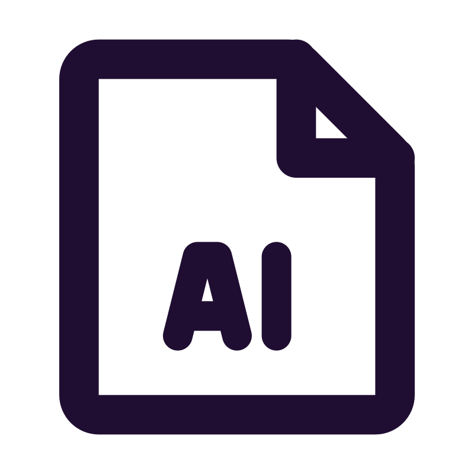

Profile
 My Approach to Software Development
My Approach to Software Development
I started as a Clean Code enthusiast, but over time, I’ve embraced a pragmatic approach. My goal is to write code that works effectively, with readability and design being equally important. I’ve worked with messy legacy systems as well as well-architected, structured codebases—gaining insight into both worlds (there's much to learn in both cases btw). While some say TDD is dead, I find value in the approach and use it when it makes sense. I prefer on-site collaboration over remote work, as I enjoy exchanging ideas on a personal level—making pair programming a natural fit for me.
 .NET
.NET
With over 4 years of professional experience in .NET and C#, I have developed web applications using Blazor, deployed them on Azure, and implemented robust authentication and authorization mechanisms. Additionally, I have extensive experience in desktop application development with WPF and earlier Windows Forms. And yes I've used MVVM extensively.
 Databases
Databases
I have extensive experience in designing and integrating databases, specializing in both SQL (SQL Server, MySQL, and more) and NoSQL (Firebase) systems.
I frequently use ORMs like Entity Framework and NHibernate when necessary.
Mobile App Development
I have designed, developed, and published mobile applications, originally as a hobby, with some even becoming profitable. My journey started with native Android apps built using Java, but I’ve thoroughly enjoyed creating hybrid solutions with Flutter. You can browse some of them here.
LLMs
Since their emergence, I’ve used large language models like ChatGPT and Copilot to boost productivity across various tasks. While I acknowledge their remarkable capabilities, I remain cautious about relying on them for software development, where precision and trust in the code are paramount. What I am definitelly going to do in the future is to develop systems that make use of LLMs, that would be fun!
 Additional Skills and Interests
Additional Skills and Interests
As mentioned, I am a passionate Linux user, both on Desktop and Server environments. I find the CLI incredibly user-friendly when I know what I’m doing, allowing me to focus on the information I need without unnecessary clutter. If asked about my favorite language, I would say C. I prefer writing code in text editors, with Sublime Text being my favorite. When debugging is essential, I rely on Visual Studio or Rider. I am curious about Vim, maybe that will be the next and final option.
Back to homepage
Work Experience
In addition to my software company and independent development experience, I’ve worked in various roles. This section focuses on positions related to software.
At DVGW Service & Consult, we create software solutions for clients and internal use, leveraging the Microsoft tech stack. Our primary focus is on .NET applications deployed to Azure, with occasional use of Python and PHP. We manage large databases, primarily using SQL Server and MySQL, and often rely on ORMs like EF-Core and NHibernate.
I work with a colleague on modernizing Integra, transitioning it from Desktop to the Web, providing new features and improving the User Experience. This project is a key product for our clients and significantly contributes to the company's revenue.
Finally, I am the sole developer and maintainer of an internal project for the IT team, an essential tool making their lifes easier.
At Teutologic Software, I worked as a Junior Software Developer, contributing to various aspects of software development, including:
- Developed and integrated UI components for the CAD application Visiometa using C#, .NET, and WPF. These standalone tools were later integrated into the system, following the MVVM pattern. Examples include a custom color picker, a dynamic menu displaying application elements with complex animations, or a password creation component with comprehensive validation checks.
- Contributed to the creation of an import function for Blender's proprietary 3D file format. This involved reverse-engineering to understand how a specific Blender version stored 3D elements (meshes) and enabling the import of those meshes into our CAD system.
- Contributed to the creation of our own custom testing framework, to ensure software quality.
- Managing tasks related to a Cloud Licensing Server of our CAD.
- Utilizing Bash scripts for automation tasks.
In my later stages there, I mentored junior programmers, supporting their skill development. I also worked on exploring thermophysical material properties for simulation software.
Education & Certifications
University of Piraeus
Msc Informatics
Master's thesis: Research on Android Network Technologies and development of DosDroid.
Udacity - Google
Android Developer Nanodegree
Project: Development of the Android app "Greek Podcasts". Users browse and listen of podcasts in the Greek language.
University of Patras
BA Informatics and Mass Media
Thesis: Developement of a tourist guide application for a greek island.
Published Projects
Below are some of the projects I've published for fun and as a hobby, showcasing my journey in exploring different technologies and concepts.

Rebetes: Rediscovering Greek Rebetico Music
As a passionate advocate for preserving cultural heritage through technology, I developed the "Rebetes" (greek Ρεμπέτες) app to cater to the needs of professional musicians immersed in the enchanting world of Greek rebetico music.
Rebetico, a rich musical tradition, often finds its stage in lively bars and taverns where musicians embark on 4-5 hour sessions. Recognizing the challenge of memorizing an extensive repertoire of over 2000 songs, the Rebetiko app was born to be the ultimate companion for these musicians.
Key Freatures:
- Offline Accessibility: The app provides a comprehensive collection of rebetico song lyrics (nearly all of them), artist information, including composers, singers, and authors, along with music details such as scales and rhythms. All of this valuable information is available offline, eliminating the need for an internet connection during performances.
- Intuitive Search: A fast and user-friendly search functionality empowers musicians to swiftly locate specific songs or explore the vast rebetico repertoire.
- Playlist Creation: To streamline their performances, users can effortlessly create playlists tailored to each session, ensuring a seamless and immersive musical experience.
Tech Stack:
Built with Flutter and Dart, the Rebetiko app operates smoothly on Android and iOS devices. Its strong foundation lies in a robust SQLite database for efficient storage. Python scripts were employed to scrape information from diverse online sources.
Availability:
While featured on Google Play, the app will be published also on the App Store allowing welcoming also iOS users.
Google Play Store
LyricsLoom: Unraveling Music with Python and Beautiful Soup
LyricLoom is a Python application designed for web scraping lyrics from a specified website and storing the gathered song information in a SQLite database.
Key Features:
The project supports multiple features, including the extraction of lyrics, artists, tags, and other metadata. Users can contribute to the project, and the documentation provides a guide for installation, usage, and contribution.
Source Code
Memogame: The Adoring Pair-Matching Game
Dive into the world of Memogame, a captivating pair-matching game available on Google Play. Beat the scores of the others in over 200 different available tracks.
Tech Stack:
Developed natively in Java, Memogame ensures a seamless and optimized gaming experience for Android users. Memogame utilizes Firebase to save scores online, allowing players to compete and showcase their memory prowess globally.
Google Play Store Source Code
DoSdroid: The Power Of The One
DoSdroid orchestrates the connection and synchronization of multiple mobile devices for a coordinated Denial of Service (DoS) attack against an HTTP server.
Users can publish HTTP servers that become eligible for attack at a specified future time. Other users may join the attack, and when the opportune moment arrives, they collectively initiate the assault.
Disclaimer:
While the app's description mentions a DoS attack, its true purpose lies in leveraging the collaborative power of numerous devices for a shared objective. The project also served as an exploration into Android's network technologies, including Bluetooth, NFC, Wi-Fi P2P, etc., during its development.
Availability:
As a result of its unique nature, this app is not eligible for publication on popular stores such as Google Play. Therefore, to use the application, you'll need to download the source code and build the project on your own.
Source Code